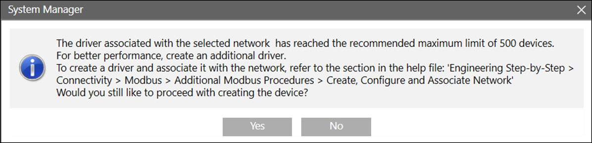

Devices
This section provides reference information about devices supported by powermanager. For related procedures, refer step-by-step.
Select the type of device, to get further information.
Support for Multiple Driver and Devices
A single Modbus driver is recommended to support up to 500 devices. When you create more devices than recommended, a message is displayed. This message displays for all SENTRON and Imported Devices with Modbus protocol.
This message displays every time you create a device over the limit.

- If you click Yes, the system allows you to create a new device for the current driver, even if the maximum limit is exceeded. You can still create a new driver to maintain performance after device creation.
You can see the Help file path provided in the message to create a new driver and device. - If you click No, the system cancels the device creation and redirects you to the previous page.
The message displays for the following scenarios:
- If the number of Modbus devices created exceeds 500 under a single driver and network.
- If the number of Modbus devices created exceeds 500 under a single driver and multiple networks. The count includes devices across all networks under the single driver.
- If Modbus devices are created using Bulk device import via CSV workflow, where the total number of devices combining those from the CSV file and the application exceeds 500 under a single driver.